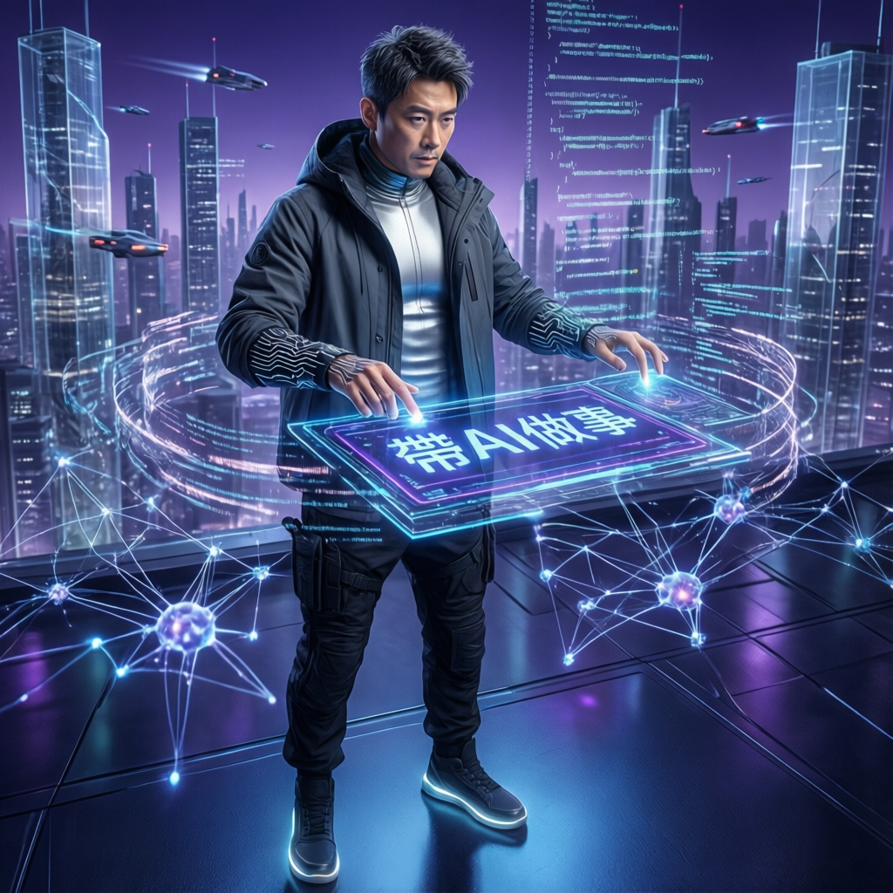

LINE臺灣工程團隊分享AI輔助開發心法，工程師角色從工匠升級為工頭

LINE 臺灣工程團隊從自發性小工具開始，逐步探索 AI 輔助開發的實戰經驗。他們從快速的 Vibe Coding 出發，發現瓶頸後轉向規格驅動開發（SDD），搭配 GitHub 開源框架 Spec Kit，讓 AI 負責寫程式、工程師專註寫規格與審覈。
這套模式成功讓大型元件開發週期從數週壓縮到 3 天，同時揭示 AI 正在重塑整個軟體開發生命週期。
LINE 臺灣企業解決方案事業部的技術團隊成立於去年 4 月。他們從小型產品「Mini Home」（LINE Mini App 生態系的入口頁面）開始試水溫。
林建辰坦言：「如果規格不夠明確，AI 很容易已讀亂回。」
團隊從 Vibe Coding 轉向規格驅動開發（SDD），導入 GitHub 開源的 Spec Kit 框架。四階段流程：
林建辰表示：「以前我們白天寫 code，現在變成白天寫 spec，下班後讓 AI 寫 code。」
團隊第一次將 Spec Kit 產出的程式送交資安團隊審查，結果「不審查還好，一查一堆問題」。於是他們在 CI/CD pipeline 中導入 AI Agent，專門監督 AI 產出的程式碼，並透過 MCP 連接公司內部 Wiki，即時抓取最新安全指引。
「現在不只用 AI 幫忙寫程式，我們還用另一個 AI，監督 AI 寫出來的程式碼。但最後負責的人，仍然是工程師。」
透過 Prompt 描述需求，AI 邊寫邊修正。Mini Home 專案 70% 程式碼由 AI 生成，2-3 週完成。
規格驅動開發：白天寫 spec，讓 AI 晚上寫 code。一個大型元件只花 3 天就完成。
將資安規範寫進規格，CI/CD 中導入 AI Agent 監督 AI 產出的程式碼，資安移到最前線。
前端與後端界線模糊，每個人都能在 AI 輔助下成為全端工程師。
| 維度 | Vibe Coding | SDD + Spec Kit | 傳統開發 | 差異 |
|---|---|---|---|---|
| 開發速度 | 快 | 快（3天完成大元件） | 慢 | ✅ +80% 效率 |
| 可控性 | 低（規格不明確就亂回） | 高（規格驅動） | 高 | ✅ 規格明確 |
| 程式碼品質 | 不穩定 | 穩定（AI 監督） | 穩定 | ✅ 可審覈 |
| 技術債務 | 快速累積 | 可控（資安規範寫入規格） | 逐漸累積 | ✅ -60% 債務 |
| 適用規模 | 小型專案 | 中小型元件 | 任何規模 | ✅ 彈性擴展 |
「以前工程師比較像工匠，專註把自己那一塊做好；未來更像工頭，帶著一羣 AI Agent 一起做事。真正的價值不在於撰寫多少程式碼，而是能否定義問題、寫出好的規格，並對 AI 產出的結果負責。」
— 林建辰，LINE 臺灣企業解決方案事業分部技術總監林建辰認為，未來每位工程師都會像一位小型產品經理，底下帶著不同功能的 AI Agent，分別負責前端、後端、測試與外部系統串接。
然而，真正困難的不是把 LLM 串接起來，而是如何讓 AI Agent 在企業環境中變成一套可管理、可監控、值得信任的系統。包括：快取策略（語法 vs 語意層級）、稽覈紀錄（Audit Log）、自動切換能力、即時監控 Token 用量等。
「誰寫程式碼不重要，最後負責的，還是工程師。」林建辰強調：當 AI 開始自己寫程式，工程師真正被放大的不是開發能力，而是規格思維、架構視野，以及治理 AI 的能力。